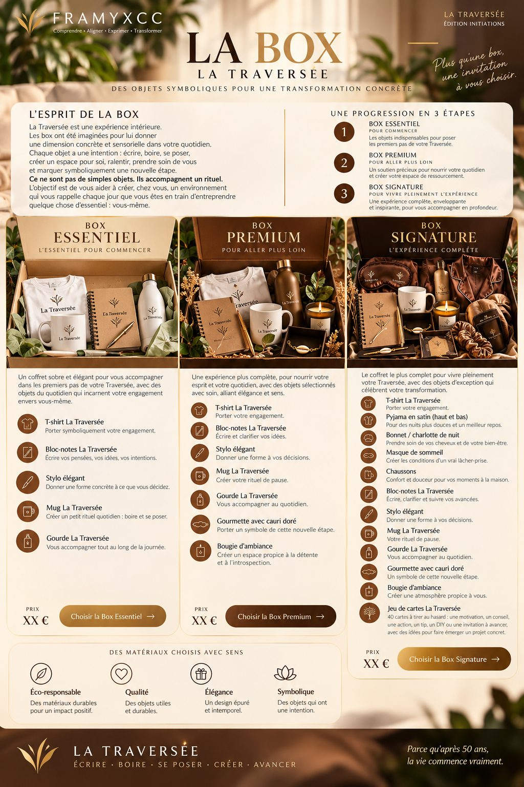
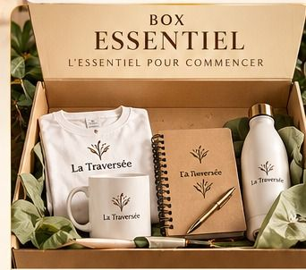
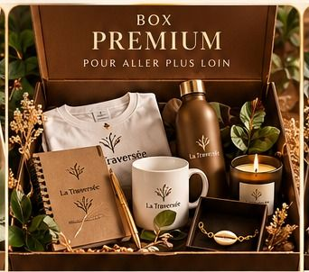
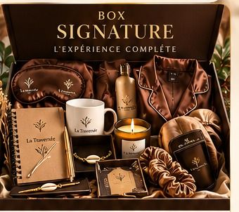

La Box
Pour vivre La Traversée de façon complète, nous vous proposons trois coffrets conçus pour prolonger l’expérience dans votre quotidien.
Précommander une box. Les box sont fabriquées en petite série. La précommande est gratuite et sans engagement de paiement : vous vous inscrivez, puis, lorsque 100 précommandes sont réunies, nous écrivons à toutes les personnes inscrites pour qu’elles procèdent au paiement, ce qui valide leur commande. Le paiement porte sur la totalité du prix, auquel s’ajoutent les frais de transport, à la charge de l’acheteur. Il n’y a aucun paiement à la livraison : la commande est prise en compte après paiement, puis livrée au plus tard 15 jours après votre paiement.
Le formulaire de précommande ouvrira très prochainement.

Prolonger l’expérience dans le quotidien.
La Traversée est une expérience intérieure. Les coffrets lui donnent une dimension concrète : écrire, boire, se poser, prendre soin de soi et créer un espace qui accompagne votre parcours.
Chaque coffret a été pensé avec un niveau de finition différent, pour proposer une expérience qui monte en gamme de l’Essentiel au Signature.
Une première expérience déjà premium.
Une sélection plus raffinée et plus complète.
Une expérience très haut de gamme, pensée comme un véritable coffret d’exception.

Commencer avec élégance.
Un coffret déjà premium, conçu pour accompagner les premiers pas de votre Traversée avec des objets utiles, beaux et cohérents.
Un bloc-notes de qualité, pensé pour écrire, réfléchir et conserver vos prises de conscience.
- T-shirt La TraverséePorter votre engagement.
- Bloc-notes La TraverséeÉcrire vos pensées, vos idées et vos intentions.
- StyloDonner une forme concrète à ce que vous décidez.
- Mug La TraverséeCréer un temps pour vous.
Précommande bientôt ouverte. Frais de transport en plus.

Aller plus loin.
La Box Premium enrichit l’expérience avec des objets plus travaillés et un carnet de réflexion d’une qualité supérieure.
Le carnet, la présentation et les objets composent un ensemble plus sophistiqué, conçu pour être conservé et utilisé dans la durée.
- T-shirt La TraverséePorter votre engagement.
- Bloc-notes La TraverséeUn carnet de qualité supérieure pour écrire et clarifier.
- StyloUn instrument d’écriture qui accompagne le carnet.
- Mug La TraverséeCréer votre temps de pause.
- Gourde La TraverséeVous accompagner au quotidien.
- Gourmette avec cauri doréUne pièce qui accompagne cette nouvelle étape.
- Bougie d’ambianceCréer un espace propice à la détente et à l’introspection.
Précommande bientôt ouverte. Frais de transport en plus.

Vivre l’expérience complète.
La Signature est pensée comme un véritable coffret d’exception. La présentation, les matières et les accessoires créent un ensemble plus intime, plus complet et plus précieux.
Une pochette ou un écritoire haut de gamme peut réunir les éléments essentiels de cette expérience et devenir un objet durable de La Traversée.
- T-shirt La TraverséePorter votre engagement.
- Pyjama satin ou soiePour des nuits plus douces et un meilleur repos.
- Bonnet / charlotte de nuitPrendre soin de vos cheveux et de votre bien-être.
- Masque de sommeilCréer les conditions d’un vrai repos.
- ChaussonsConfort et douceur à la maison.
- Carnet SignatureUne pièce d’écriture de niveau supérieur, pensée pour durer.
- StyloUn instrument d’écriture assorti.
- Mug La TraverséeVotre temps de pause.
- Gourde La TraverséeVous accompagner au quotidien.
- Gourmette avec cauri doréUne pièce de cette nouvelle étape.
- Bougie d’ambianceCréer une atmosphère propice à vous.
- Jeu de cartes La Traversée40 cartes pour prolonger l’expérience.
Précommande bientôt ouverte. Frais de transport en plus.
Le jeu de cartes La Traversée
40 cartes pour prolonger l’expérience. Chaque carte propose une action, une idée, un conseil, une réflexion ou une invitation à oser.
Vous pouvez en choisir une au hasard lorsque vous souhaitez ouvrir une nouvelle réflexion ou passer à l’action.
Le jeu complète La Traversée sans reproduire les 40 jours du parcours.
« Aujourd’hui, allez au cinéma seul(e). »
« Offrez-vous une heure sans téléphone. »
« Faites quelque chose de vos mains. »
« Faites aujourd’hui quelque chose que vous repoussez depuis longtemps. »
Deux dimensions d’une même expérience.
La Traversée constitue le parcours de 40 jours. La Box en prolonge l’expérience dans le quotidien par des objets choisis et une qualité de présentation qui évolue selon le coffret.